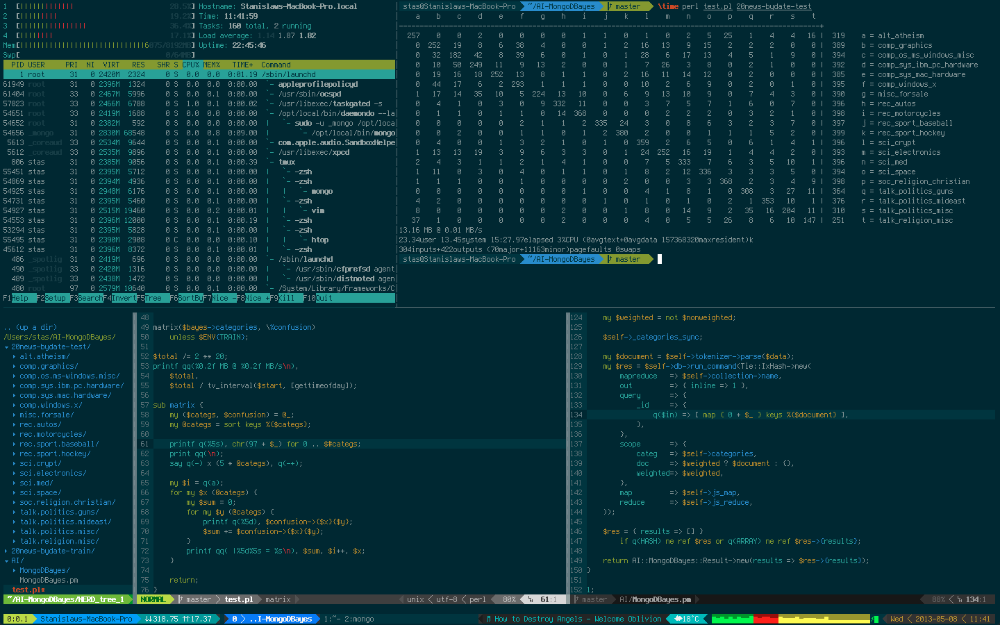

zsh 入門 ---- 研究生活 いかが お過ごしですか？ ---- Terminal 触った？ ----  ---- <font color="red">Terminal</font> is Cool ---- カスタマイズ してもっと 使えるようにしよう ---- どうやったら できるのか ---- シェルの 設定を 変える ---- シェルとは ---- 有名なの ・bash（Macのデフォルト） ・zsh ---- 漢なら ---- <font color="red">zsh</font> ---- zshを 使おう ---- なぜ zshか ---- ・入力補完が優れてる ・非標準コマンド(brew、gitとか)の入力補完 ・カラーリングがbashより見やすい ・bashより処理が高速 ・同時に立ち上げてるターミナル間でのhistory共有 ・時間のかかる処理が終わったら通知 ・gitのカレントブランチの表示 ・履歴機能が強力(改行も記録される) ---- 俺俺 <font color="red">zsh</font> 設定集5 ---- 詳しくは https://github.com/ir77/ dotfiles/blob/master/.zshrc ---- 1 zsh syntax highlighting ---- 存在しない コマンドは 赤色になる ---- 実演 :317 ---- 2 補完の 種類が 豊富 ---- 実演 ex.git, ドット補完 :326 ---- 3 aliasの 自由度が 高い ---- 実演 ex.memo, .c :459 ---- 4 通知 できる :517 ---- 5 peco ---- かっこよく履歴や ディレクトリを 移動できる ---- 実演 :575 ---- 漢なら ---- <font color="red">zsh</font> ---- お わ り